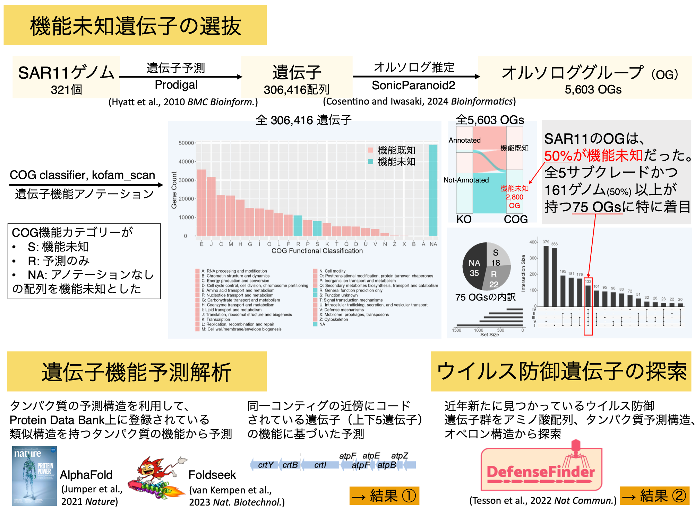

Overview of the SAR11 Genome Atlas
The SAR11 Genome Atlas is interactive genome and gene annotation viewer of SAR11 clade, the most abundant bacterial lineage in the ocean.
To see details, please check our publication (Updating for add genomes!).

Citation information:
Nishino et al. "SAR11 Genome Atlas." ongoing.
Nishino et al. "Functional Unknomics of the SAR11 clade using bioinformatics approaches." in prep.